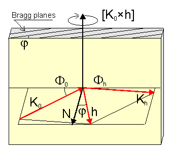
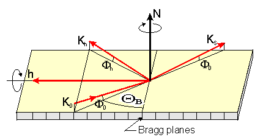

GID_sl provides multiple options to define the Bragg diffraction geometry as well as the possibility to simulate various scans around the Bragg peaks.
The key point in proper using those options is understanding the difference between coplanar and non-coplanar diffraction geometries. We call the geometry coplanar where the incident wave vector k0, the reciprocal lattice vector h, and the surface normal N lie in the same plane (see Fig.1). In other words, this is the case when the x-ray scattering plane determined by the vectors k0 and h is perpendicular to the surface. In the coplanar Bragg diffraction the scans are always around the vector [k0xh] (see Fig.1) while the variety of other scan options provided by GID_sl is only relevant for more advance non-coplanar diffraction.

By now the most of x-ray experiments are carried out in coplanar geometries since they are simpler to implement.
The major advantage of GID_sl as compared to any other known to me x-ray diffraction simulation program is that GID_sl can handle arbitrary non-coplanar cases of diffraction including those with grazing incidence/exit and the x-ray specular reflection effects.
The most frequently used example of non-coplanar Bragg diffraction is the grazing-incidence diffraction, GID (see Fig.2). Here the scattering plane (the plane defined by k0 and h) is no longer perpendicular to the surface and the actual inclination of this plane is determined by the choice of the incidence angle of x-rays. So, as we see, the non-coplanar geometries add additional degree of freedom in choosing the incidence and exit angles of x-rays, thus providing more flexibility in studying structural properties of crystals.
In addition, the non-coplanar diffraction geometries offer a wide choice of scan options. For example, as shown on Fig.2, one may rock the crystal around the surface normal N in order to keep the incidence angle unchanged, or around the reciprocal vector h in order to vary the incidence angle while preserving the Bragg condition.

The table below lists all the available ways to specify diffraction geometries to the GID_sl program:
| No | Geometry specification by... | Geometry type | Surface specification | Asymmetry parameter | Scan axis |
|---|---|---|---|---|---|
| [1] | Surface orientation & incidence angle of K0 | non-coplanar(1) | required | incidence angle of K0 | any |
| [2] | Surface orientation & exit angle of Kh | non-coplanar(1) | required | exit angle of Kh | any |
| [3] | Surface orientation & condition of coplanar grazing incidence | coplanar | required | no | [K0*h] |
| [4] | Surface orientation & condition of coplanar grazing exit | coplanar | required | no | [K0*h] |
| [5] | Surface orientation & condition of symmetric Bragg case | non-coplanar(2) | required | no | any(2) |
| [6] | Condition of coplanar reflection & angle of Bragg planes to surface | coplanar | no | Bragg planes angle to surface | [K0*h] |
| [7] | Condition of coplanar reflection & incidence angle of K0 | coplanar | no | incidence angle of K0 | [K0*h] |
| [8] | Condition of coplanar reflection & exit angle of Kh | coplanar | no | exit angle of Kh | [K0*h] |
| [9] | Condition of coplanar reflection & asymmetry factor beta=g0/gh | coplanar | no | asymmetry factor g0/gh | [K0*h] |
| (1) | The geometry may become coplanar if the extreme incidence and exit angles are substituted. These extreme angles are calculated in the geometry specifications [3] and [4] respectively. |
| (2) | The geometry becomes coplanar if the reciprocal vector of Bragg diffraction is perpendicular to the surface. The GID_sl detects the coplanar case automatically and then chooses [K0*h] as the scan axis. |